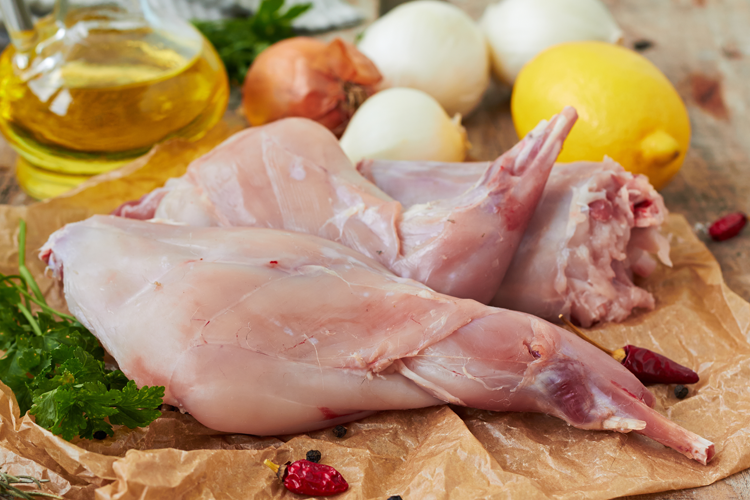

BUNNOS
Rabbits have seven letters, so does healthy.
Bunnos is an online marketplace specifically for sales
of breeding rabbits and meat rabbits.
This project is aimed at enthusiasts willing to
purchase rabbits at ease for breeding and meat
purposes respectively.
